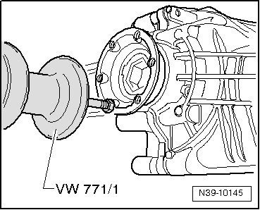
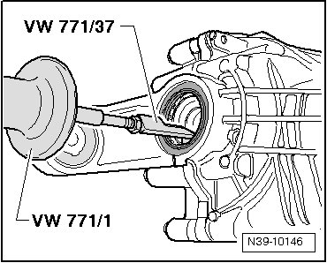
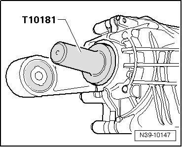
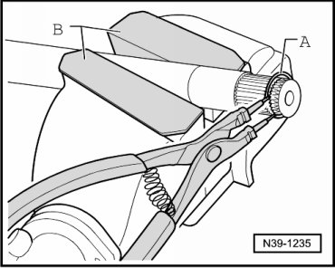

Right Flange Shaft Seal, without Differential Lock
Right Flange Shaft Seal, without Differential Lock
Special tools, testers and auxiliary items required
• Slide hammer (VW 771)
• Pulling hook (VW 771/37)
• Thrust piece (T10181)
• Sealing grease (G 052 128 A1)
Removing
- Remove rear final drive. Refer to --> [ Rear Final Drive ] Rear Final Drive.
- Secure slide hammer (VW 771) to right flange shaft.

- Pull out right drive flange.
- Pull out sealing ring for flange shaft using slide hammer-complete set (VW 771) and additional part for VW771 (VW 771/37).

Installing
- Drive in new seal until seated.

- Fill area between sealing lip and dust lip halfway with sealing grease (G 052 128 A1).
Before installing the flange shaft, check the dust cap for damage. Replace the dust cap if necessary. Refer to --> [ Dust Cap for Flange Shaft, Replacing ] Left Flange Shaft Seal, without Differential Lock.
- Remove old circlip - A - from groove in flange shaft using pliers.

B Protective jaws
- Insert new circlip in groove of flange shaft, being careful not to overstretch circlip.
- Drive in flange shaft using a plastic head hammer.
- Install rear final drive. Refer to --> [ Rear Final Drive ] Rear Final Drive.
- Checking gear oil in rear final drive. Refer to--> [ Gear Oil, Checking ] Gear Oil, Checking.